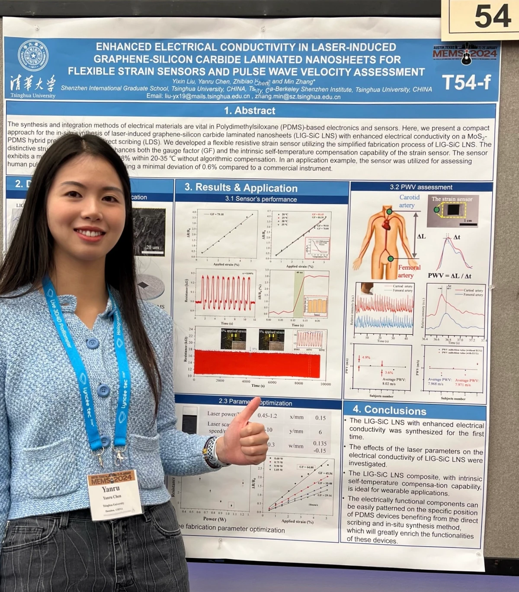
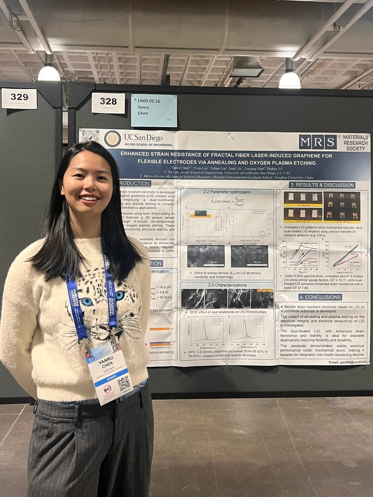

About Me
Yanru is a Ph.D. student in Electronic and Computer Engineering at the University of California San Diego. She works with Prof. Tajana Rosing in the Systems Energy Efficiency Lab (SEELab). Outside of her academic work, Yanru enjoys singing and won the Audience Favorite Award in Jilin university singer competition.
- Email: yac054@ucsd.edu
- Phone: +1 858-412-9248
- Research Areas: Computer Architecture, Processing-in-memory, In Storage Processing, LLM, Graph Analytics, SW/HW Co-design
- Links: LinkedIn | Google Scholar
Curriculum Vitae
Education
Jilin University
2017 – 2021
B.S. in Electronic Science and Technology
Jilin University
2018 – 2020
B.A. in International Economy and Trade
Tsinghua University
2021 – 2024
M.S. in Electronic Information
University of California, San Diego
2024 – 2028
Ph.D. in Electronic and Computer Engineering
Research
Wearable Acetone Gas Sensor for Measuring Exhaled Breath of Diabetes Patients
ACS Advanced Materials & Interfaces, Oct 2024
Semiconductor metal oxide (SMO) gas sensors are low‐cost, real‐time, and long‐lasting but usually need elevated temperatures. In this study, we developed a flexible, room‐temperature sensor using UV‐assisted design by embedding ZnO nanoparticles into a PDMS porous framework. An innovative low‐modulus island‐bridge structure allowed 60% stretchability. When worn, this device reliably detects acetone in diabetic patients’ exhaled breath.
Enhanced Conductivity in Laser‐Induced Graphene–Silicon Carbide Laminated Nanosheets for Flexible Strain Sensors and Pulse Wave Velocity Assessment
IEEE MEMS Conference 2024 (0115)
We present a novel flexible strain sensor made from laser‐induced graphene–silicon carbide (LIG‐SiC) laminated nanosheets. By blue‐light laser scribing (445 nm) on MoS₂–PDMS precursors, the sheet’s conductivity increased 5× compared to earlier work. The sensor, encapsulated in PDMS, exhibits a gauge factor deviation ≤ 1.88% over 20 – 35 °C without algorithmic compensation and only 0.6% error versus commercial instruments in pulse wave velocity (PWV) tests.
Perfusion Heterogeneity Assessment in Human CT Data Using PM3 Platforms and Machine Learning Segmentation
IEEE EMBC 2020 Conference (2037)
CT perfusion imaging of the heart is a well‐established diagnostic method. We developed a new texture analysis based on an improved fractal dimension algorithm. By manually segmenting CT perfusion frames to reconstruct 3D blood flow, we applied an enhanced fractal dimension metric to evaluate changes under vasodilation and cooled‐dialysate (therapeutic hypothermia). Results show dialysis significantly alters coronary vasculature fractal dimension at CT resolution.
Clinical Relevance: This method enables rapid, semi‐automated, and interpretable texture metrics for clinical CT perfusion studies.
Quantifying Microvascular Alterations Due to a Pharmacological Agent
IEEE EMBC 2020 Conference (2044)
This study examines how CORM2 (carbon monoxide releasing molecule‐2) affects skeletal muscle microvasculature in vivo. Rat muscle videos were collected using intravital microscopy both before and after CORM2. We extracted capillary networks and measured diameter changes. CORM2 increased capillary radius and recruitment—improving tissue oxygenation—but also introduced network heterogeneity.
Clinical Relevance: Identifying these dual effects helps guide potential therapies and highlights microcirculatory risks.
Dynamic Color‐Changing Solar Cell Based on Pr₂O₃ Characteristics
Jun 2019 – Jun 2020
We developed a photochromic solar cell with dynamic color‐changing ability under different lighting conditions. By integrating Pr₂O₃ photochromic layers instead of conventional electrochromic materials, the device changes color without consuming its own generated energy—avoiding utilization efficiency loss.
Presentation
-
Quantifying Microvascular Alterations Due to a Pharmacological Agent
IEEE EMBC 2020 Oral Presentation (2044) -
Fractal Dimension‐Based Texture Analysis of CT Perfusion Imaging
IEEE EMBS 2020 Oral Presentation (2037) -
Enhanced Conductivity in LIG‐SiC Laminated Nanosheets for Flexible Strain Sensors and PWV Assessment
IEEE MEMS 2024 Poster Presentation (0115) -
Enhanced Strain Resistance of Fractal Fiber Laser‐Induced Graphene for Flexible Electrodes
IEEE Transducer 2025 Poster Presentation
-
Enhanced Conductivity in LIG‐SiC Laminated Nanosheets for Flexible Strain Sensors and PWV Assessment
WOLIT ’24 Oral Presentation (16)
-
Enhanced Strain Resistance of Fractal Fiber Laser‐Induced Graphene for Flexible Electrodes
MRS 2024 Fall Poster Presentation (EN09.05.16)
Experiences & Internships
Shenzhen Hanit Industrial Technologies Co.
Jun 2023 – Oct 2023
- Manufactured wearable flexible strain sensors
- Developed feature extraction algorithms
- Simultaneously recorded carotid and femoral pulse wave signals
- Built a compact wearable Pulse Wave Velocity (PWV) system
Shenzhen Vivolight Medical Device & Technology Co.
Jun 2020 – Aug 2020
- Designed test plans and wrote test cases
- Led product testing processes to ensure high‐quality results
- Analyzed test outcomes and improved test specifications
- Participated in requirements, schematics, and PCB reviews
- Developed the test platform and tools
MITACS Internship (online)
Jan 2020 – Aug 2020
Through MITACS at University of Western Ontario, I contributed to a neuroscience project using texture analysis to extract microvascular signals from mouse heart videos and reconstructed 3D images—enabling cardiac blood flow heterogeneity diagnosis.
Presented two papers at EMBC 2020: “Quantifying Microvascular Alterations Due to a Pharmacological Agent” and “Fractal Dimension‐Based Texture Analysis of CT Perfusion Imaging.”
Summer School at NUS & NTU, Singapore
Jun 2019 – Aug 2019
Visited School of Mathematical Sciences and School of Electrical & Electronic Engineering at NUS and NTU. Attended lectures on advanced semiconductor materials and had discussions with professors. Experienced Singapore culture.
Summer School at HKU, HKUST & CityU
Jun 2018 – Aug 2018
Attended workshops on micromaterials and devices at HKU, HKUST, and CityU. Learned from Prof. Li‐Hsing Chen on brain‐machine interfaces, visited 5G research labs, and saw MIT Robotics Atlas demonstration. This experience broadened my interdisciplinary research perspective.